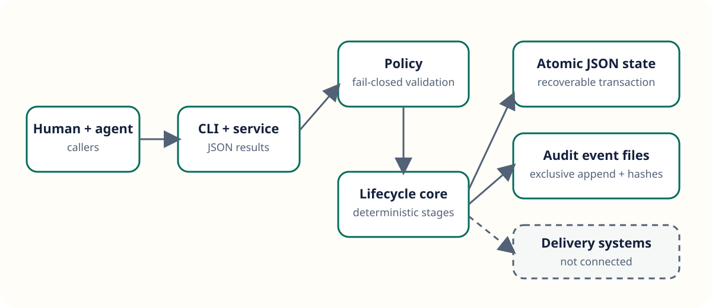

Deterministic lifecycle
Six adjacent stages with policy-bound evidence requirements.
AI Development Lifecycle
AIDLC records work, evidence, transition proposals, approvals, and audit events without granting agents release authority.
Inspect the synthetic workflowAgents can prepare evidence and propose progress. Independent humans retain gate, risk, and release decisions.
Control-plane primitives
Six adjacent stages with policy-bound evidence requirements.
Independent approvals and role coverage on high-impact changes.
Append-only JSON events linked by canonical SHA-256 hashes.
Synthetic local demonstration
This static view contains generated example data only. It makes no network requests and does not read a live project store.
Loading local example data.
Architecture

Honest readiness
The current release is a single-host local implementation. It has no user authentication, remote API, database, cryptographic signatures, key management, or distributed concurrency controls.